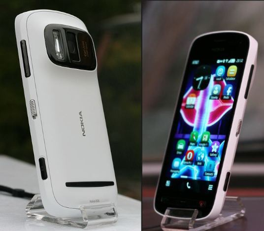

Mobile

The Nokia 808 Pureview is a smartphone by Nokia. Unveiled in 2012 at the Mobile World Congress, it was the first phone to use Nokia's Pureview Pro Technology. However, it is also known for an entirely different reason. What?
view question •
view answer •
return to grid